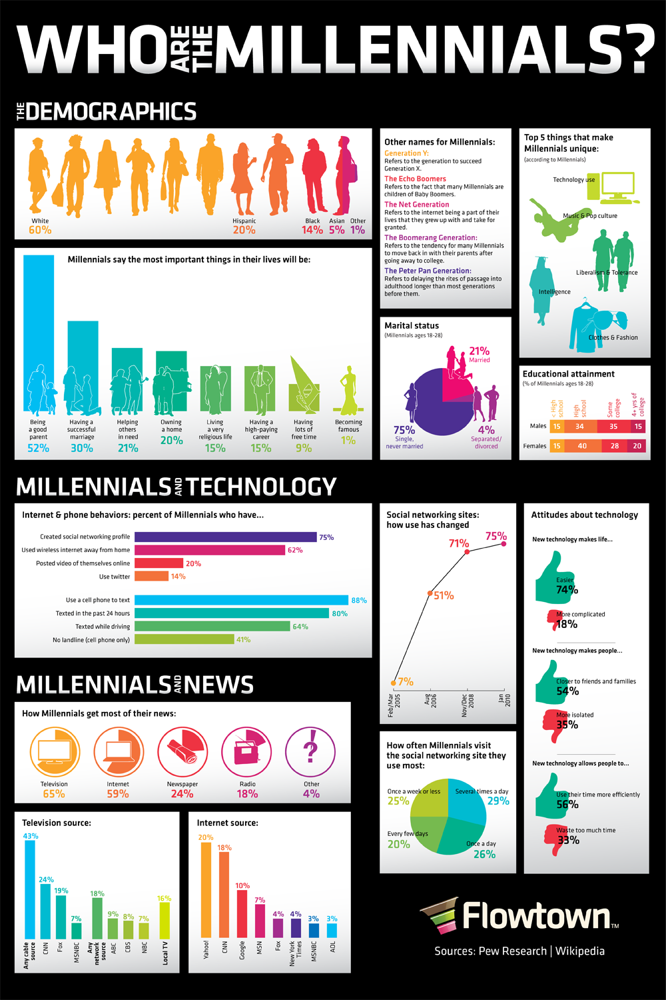
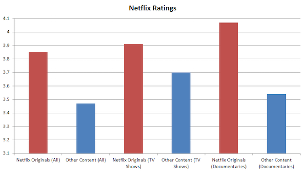

After extensive research, I have found two news articles, containing online visualizations that I desired to analyze. One being considered great and the other poor. Beginning with the millenials infographic, I chose this as my great visualization pick for it met every requirement on Cairo's list of guidelines. First, it provided reliable information provided by the credible Pew Research Center out of the Washington D.C. area. Next, its use of numerous charts and colors not only made it aesthetic appealing, but also made the patterns more noticible to the reader. Lastly, the visual was extremely well organized in its layout and did not allow its visual qualties to detract and/or distract from the depth of data it showcased. In comparison, the Netflix ratings visual falls flat on its metaphorical face. It uses a simple design that works for all audiences, but lacks luster in its design to engage readers fully. This is evident in the use of only one form of data visualization, lack of axis labels, and a basic color scheme. In order to improve this visualization, I would expand on the amount of data given and use different visual forms such as line graphs and pie charts. This would ultimately increase its aesthetic appeal while also increasing the depth of the data.
 